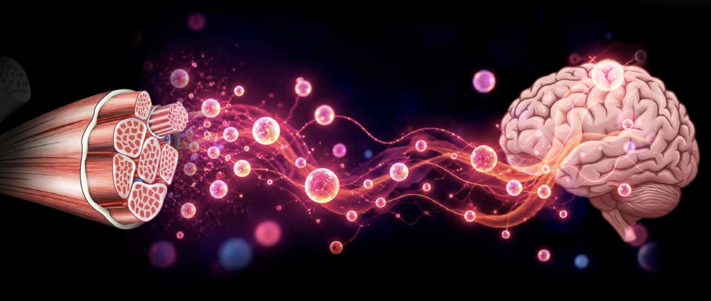

Oportunidades no meu laboratório: iniciação científica, mestrado e doutorado

Venha fazer ciência com a gente!
Estamos recrutando estudantes e pesquisadores em formação para início imediato, com disponibilidade de bolsa!
Nosso grupo de pesquisa, localizado em São Paulo, integra o programa Ciência Pioneira e desenvolve projetos no Instituto D’Or de Pesquisa e Ensino (IDOR) - Unidade Brigadeiro L Antônio 5001.
Buscamos pessoas interessadas em iniciação científica, mestrado ou doutorado, com diferentes níveis de experiência, para participar de projetos na interface entre biologia molecular, neurociência, edição epigenética, e desenvolvimento de ferramentas moleculares e novas estratégias terapêuticas.
Há possibilidade de ingresso imediato como estagiário(a) de pesquisa remunerado(a), mas informal, com perspectiva de continuidade no grupo e candidatura ao Programa de Pós-Graduação em Ciências Médicas do IDOR no próximo processo seletivo, conforme os requisitos e critérios de admissão do programa.
Como o exercício físico protege o cérebro?
Essa é uma das perguntas que orientam nossas pesquisas.
Embora a atividade física esteja associada a benefícios para a saúde cerebral, muitos dos mecanismos moleculares envolvidos nessa proteção ainda não são completamente compreendidos.
Investigamos como sinais produzidos pelo músculo podem influenciar a expressão gênica, promover a resiliência neuronal e contribuir para a proteção contra doenças neurodegenerativas, como a doença de Alzheimer.
Para responder a essas perguntas, combinamos tecnologias CRISPR, edição epigenética, modelos celulares humanos e análises genômicas e transcritômicas.
O que pesquisamos?
Nossas principais linhas de investigação incluem:
- CRISPR e edição epigenética: desenvolvimento e aplicação de ferramentas para modular a expressão gênica e investigar mecanismos moleculares.
- Neuroproteção e doença de Alzheimer: identificação de genes, fatores neuroprotetores e mecanismos associados à resiliência neuronal.
- Comunicação músculo-cérebro: investigação de sinais moleculares associados ao exercício físico e seus potenciais efeitos sobre a saúde cerebral.
- Biologia molecular e celular: utilização de células humanas, modelos neuronais e técnicas experimentais para investigar processos biológicos.
- Bioinformática e genômica: análise de dados transcriptômicos e outras abordagens ômicas para identificar mecanismos e vias moleculares relevantes.
Quem estamos procurando?
As oportunidades são destinadas a estudantes e profissionais em diferentes etapas de formação:
- Iniciação científica: estudantes de graduação interessados em iniciar sua trajetória em pesquisa.
- Mestrado: graduados ou estudantes em fase de conclusão da graduação interessados em desenvolver um projeto científico.
- Doutorado: mestres ou profissionais com formação compatível interessados em desenvolver pesquisa em neurociência molecular e biotecnologia.
São bem-vindas pessoas de Ciências Biológicas, Biomedicina, Biotecnologia, Química, Bioquímica, Farmácia, Neurociências, Bioinformática e áreas relacionadas.
Não espero que você já domine todas as técnicas. Para iniciação científica, não espero experiência prévia com nenhuma delas, espero curiosidade e vontade de aprender. Para mestrado e doutorado, alguma vivência em biologia molecular e celular é desejável, mas o que pesa mais é a disposição de aprender da bancada à bioinformática.
Valorizamos curiosidade científica, pensamento crítico, dedicação, iniciativa e vontade incessante de aprender.
Bolsa e início das atividades
Temos disponibilidade de bolsa para início imediato das atividades de pesquisa em São Paulo.
A proposta é oferecer uma oportunidade de integração ao laboratório, com participação em projetos científicos, treinamento em técnicas experimentais e desenvolvimento de habilidades em pesquisa.
Para candidatos interessados em mestrado ou doutorado, essa etapa poderá funcionar como um período inicial de pesquisa remunerada, com possibilidade de desenvolvimento de um projeto e posterior candidatura ao Programa de Pós-Graduação em Ciências Médicas do IDOR, no próximo processo seletivo.
A continuidade na pós-graduação dependerá da aprovação no processo seletivo e do cumprimento dos requisitos institucionais.
Como se candidatar?
Se você tem interesse em fazer parte do nosso grupo, envie um e-mail contendo:
- Uma breve apresentação pessoal e seus interesses científicos.
- Seu currículo acadêmico ou Currículo Lattes.
- Seu nível atual de formação e interesse em iniciação científica, mestrado ou doutorado.
- Uma breve explicação sobre por que gostaria de participar das nossas pesquisas.
E-mail: thyago.calvo@idor.org
Assunto: Interesse em pesquisa no Lab IDOR/Ciência Pioneira – Seu nome
A ciência começa com boas perguntas.
Se você gosta de desafios, tem curiosidade sobre como os genes funcionam e quer contribuir para a compreensão dos mecanismos moleculares da saúde e da doença, entre em contato!
Compartilhe esta oportunidade com quem possa se interessar.